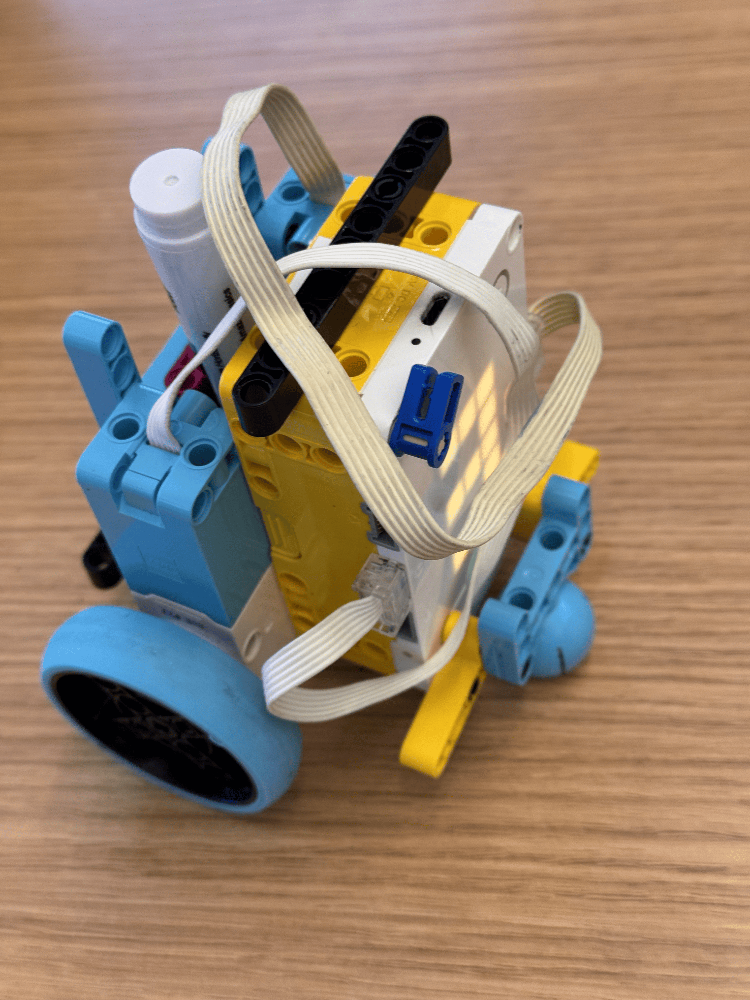
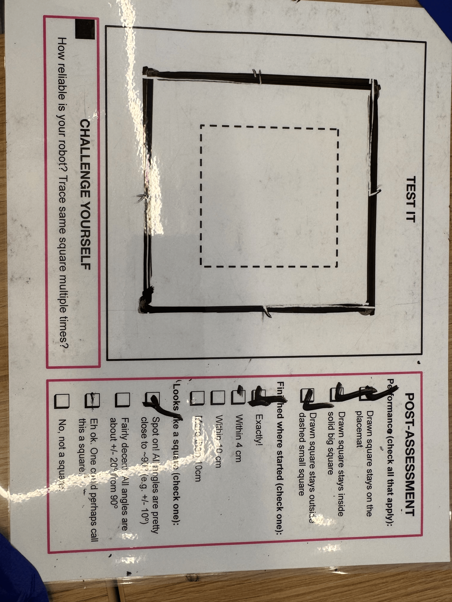

In this project, the goal was to create a machine that could draw a square within the boundaries of a large square and would never draw within the smaller square. I designed a car built around a marker so that the center of rotation was roughly aligned on the tip of the marker. I came to this design after several iterations, including an interation that looked more like a traditional push bot with the marker next to the roller and a design that had the marker attached from only the top using rubber bands. The problem with each of these designs came with either the ability to turn requiring the marker to draw an arc or the marker not being straight. Code wise, I tried to implement the IMU for course correction as an experiment, but the IMU had difficulty keeping an accurate readingn of the yaw angle and there was usually a random inital offset that would throw off the course correction. I ended up using the encoder attached to the motors and drove it to a specific amount of a rotation. I also calculated that per degree of a revolution, the car travels roughly .048 centimeters because of the radius of the wheels. This approch ended up being very effective and completed the task.

# Start your new project here!
from hub import port, motion_sensor
import motor_pair
import runloop
DRIVE_TRAIN = motor_pair.PAIR_1
#track IMU to stop turning, run it in a while loop
async def run_to_position(distance):
#this method will run the car to a target position
#distance is in centimeters, an inch is 2.54 centimeters
#wheels have a diamter of 56 mm, or a radius of 2.8 centimeters
# (2.8 * 2 * 3.1415) / 360 = cm per degree = 0.0488677778
# target travel of 4. inches (5 * 2.54) / 0.0488677778 = 311.86194 degrees
await motor_pair.move_tank_for_degrees(DRIVE_TRAIN, distance, 80, 80) #pair degrees, left velocity, right velocity
async def main():
motor_pair.unpair(DRIVE_TRAIN)
motor_pair.pair(DRIVE_TRAIN, port.C, port.D)
for i in range(4):
await run_to_position(220)
await runloop.sleep_ms(2000)
await motor_pair.move_tank_for_degrees(DRIVE_TRAIN, 180, 80, -80)
await motor_pair.unpair(DRIVE_TRAIN)
runloop.run(main())